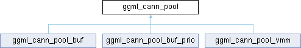

- Generated by
 1.16.1
1.16.1
|
Neura
Gesture and voice-controlled desktop assistant
|
Abstract base class for memory pools used by CANN. More...
#include <common.h>

Public Member Functions | |
| virtual | ~ggml_cann_pool ()=default |
| Virtual destructor for the memory pool. | |
| virtual void * | alloc (size_t size, size_t *actual_size)=0 |
| Allocates memory from the pool. | |
| virtual void | free (void *ptr, size_t size)=0 |
| Frees a previously allocated memory block. | |
Abstract base class for memory pools used by CANN.
|
pure virtual |
Allocates memory from the pool.
| size | The size of the memory block to allocate. |
| actual_size | Pointer to a variable where the actual allocated size will be stored. |
Implemented in ggml_cann_pool_buf, ggml_cann_pool_buf_prio, and ggml_cann_pool_vmm.
|
pure virtual |
Frees a previously allocated memory block.
| ptr | Pointer to the memory block to free. |
| size | Size of the memory block to free. |
Implemented in ggml_cann_pool_buf, ggml_cann_pool_buf_prio, and ggml_cann_pool_vmm.